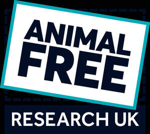
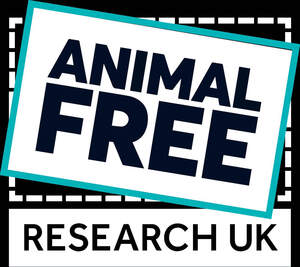

Trade Mark Journal No.2026/011 13 March 2026
UK00004329130 23 January 2026 (9,16,18,21,25,35,36,41,42)
Mark 1

Mark 2
Mark 3
Mark 4
Mark 5

- Class 9
- Databases; electronic databases; downloadable media; downloadable publications; podcasts; downloadable podcasts; phone cases; mobile phone cases; laptop bags.
- Class 16
- Printed matter; printed publications; educational publications; printed reports; printed research reports; periodicals; printed training materials; books; prints; journals; medical journals; pamphlets and brochures; newsletters; stationery; instructional and teaching material (except apparatus); notebooks; printed award certificates.
- Class 18
- Bags; tote bags.
- Class 21
- Water bottles; mugs.
- Class 25
- Clothing; headgear; t-shirts; hoodies; caps.
- Class 35
- Arranging promotion of charitable fundraising events; arranging and conducting promotional events; subscriptions to electronic journals; database management; development of promotional campaigns; online retail services connected with the sale of clothing, headgear, bags, water bottles, mugs, notebooks and stationery.
- Class 36
- Fundraising and financial sponsorship; financial sponsorship; charitable fundraising; charitable fundraising services; charitable collections; arranging charitable fundraising events; arranging charitable fundraising activities; charitable fundraising by means of entertainment events; providing information relating to charitable fundraising; provision of grants, loans and funds to support scientific and technological research.
- Class 41
- Educational services; educational research; training services; lecturing; arranging lectures, meetings, seminars and presentations; publishing services; publishing by electronic means; publication of books, journals and articles online; electronic publishing services; providing non-downloadable electronic publications; organising, conducting and providing seminars, conferences, symposia, meetings, debates, lectures and workshops; organising, conducting and providing exhibitions for educational purposes; conducting and providing exhibitions for training purposes; awarding of prizes; arranging and conducting award ceremonies; organising and conducting lotteries.
- Class 42
- Research services; research and design services; industrial analysis and research services; scientific research; medical research; laboratory research; human specific research; scientific research relating to biology; toxicological research services; research and development in the field of biochemistry; scientific and technological services; biochemistry services; biochemistry consultancy; biochemistry research services; biology consultancy; scientific consultancy; maintenance of databases.
Animal Free Research UK Ltd
Representative: Russell-Cooke LLP